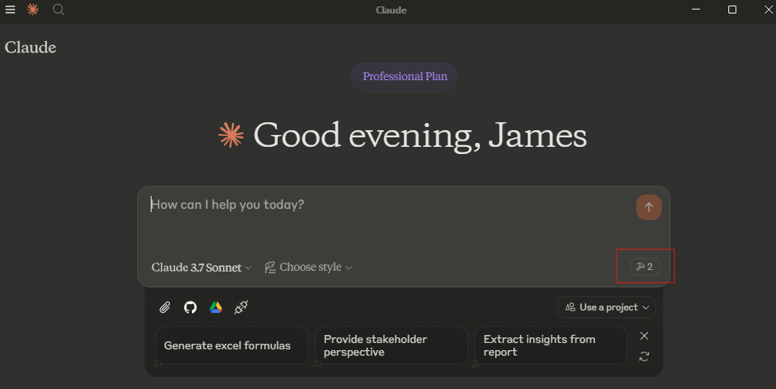
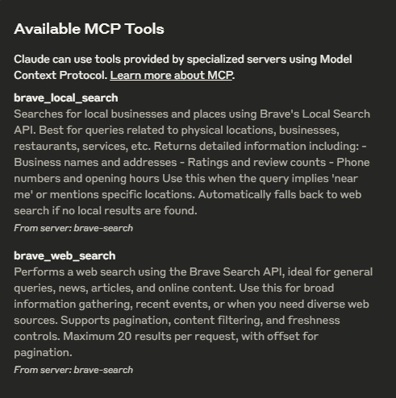
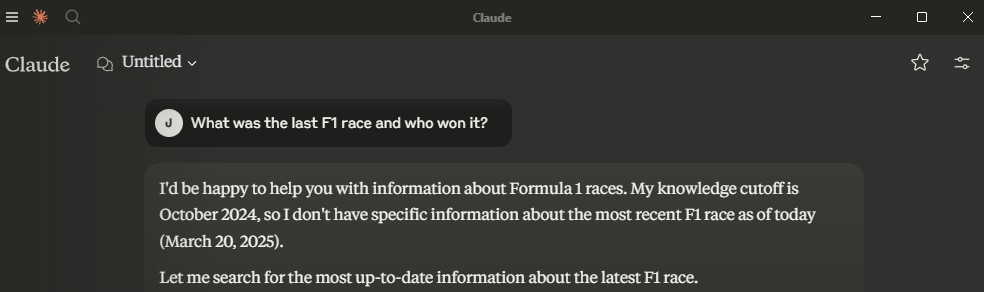
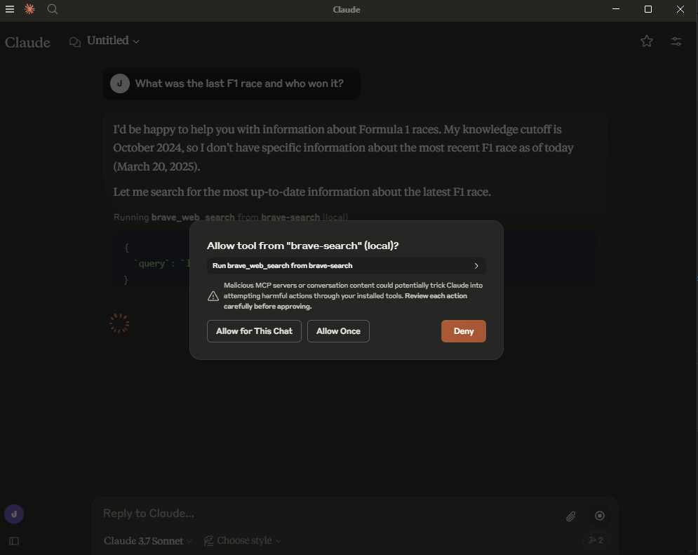
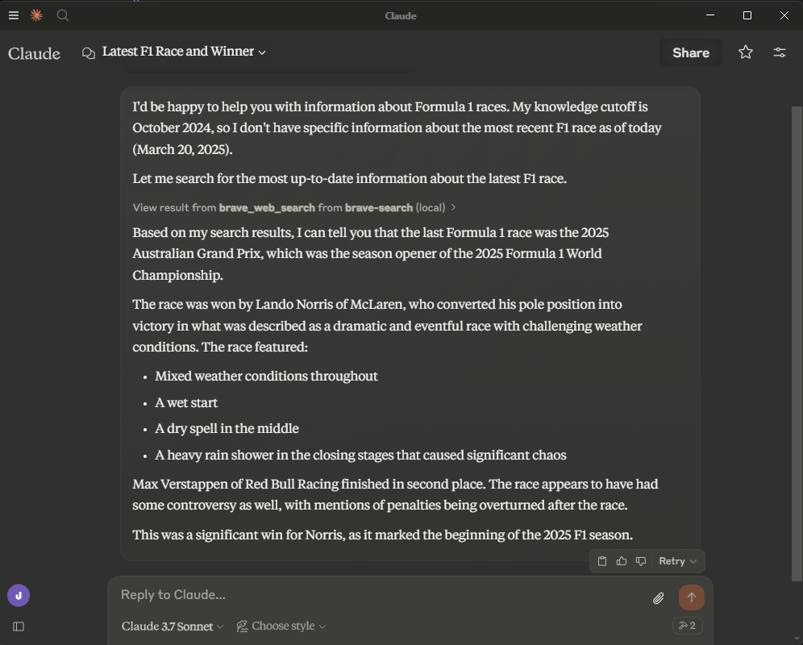
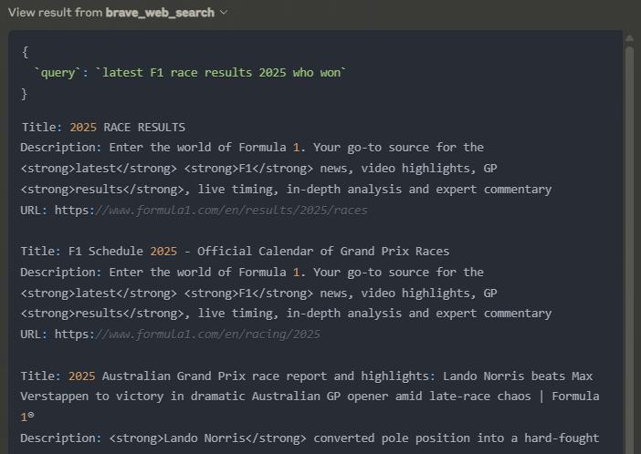

Until yesterday, Claude was one of the few LLMs which didn’t natively have a search capability. As use of LLMs becomes more normalised, we expect more of them, and limitations we previously accepted (e.g. a knowledge cut-off date) start to become unacceptable. This has been the case with Claude, as you have not been able to reference any recent new developments, and for me at least, this has started to become a real issue. I found myself going back to ChatGPT despite having a Claude Pro subscription for this reason. This gave me an opportunity to implement an MCP server to add search as a tool which Claude could then use when I asked a query, and I naturally wanted to share my experience via this blog.
Introduction to MCP: A Bridge Between LLMs and Tools
MCP stands for Model Context Protocol and was launched by Anthropic in November of last year. It’s a standardised way for an LLM to interact with external tools. Have you thought whilst using an LLM, wouldn’t it be great if I could use an LLM to interact with some external website, e.g. add an event to your Google calendar?
As with any protocol, you have a client and a server; the client is attached to a chat application and the server is the component which interfaces with the external resource. It is possible to achieve this by coding your own software using an agentic framework like Langgraph or Pydantic AI, but these mean starting from scratch and implementing a feature from the ground up.
The beauty of MCP is that, because it is standardised, you can connect it to a number of already existing clients, e.g. Claude, Co-pilot or any other client which can act as an MCP client. The same is true with servers; you can add as many as you like. They can often easily be open-sourced and shared as the services they connect to are used by many. The standard is modular by design, with a clearly defined interface between tool and chat interface.
Implementing Claude Search: A Step-by-Step Guide
To configure Claude to use an MCP server, you’ll need to follow these steps:
1. Setting Up Your MCP Server
Anthropic, in their initial announcement, open-sourced a number of already built servers which you can find in their GitHub repository.
Today we are going to implement one of these, the Brave-search MCP server. Brave Search is an independent search engine with its own index rather than relying on results from Google or Bing.
To begin with, we’ll need to clone the repo to get the code base.
git clone https://github.com/modelcontextprotocol/servers.gitFrom here you can see there are a number of implementations of various tools, showing the versatility of MCP. We’ll be using /src/brave-search so we can build the image with:
docker build -t mcp/brave-search:latest -f src/brave-search/Dockerfile .With that, we are done getting the MCP server ready, so next we can look at setting up Brave Search.
2. Acquiring Brave Search API Keys
As our MCP server will be linking us to an external resource, Brave Search, we’ll need to sign up to Brave Search. In doing this, you’ll need to choose a plan and add your credit card details. Note that this shouldn’t be an issue as you can use the free plan for this demo as it allows 2,000 queries for free. Once you are signed up, you’ll then be able to create an API key you’ll want to copy and keep handy for the next step.
3. Configuring Claude Desktop
To use MCP with Claude, you need to download Claude desktop so that it can access the local MCP server on your machine. Once you have downloaded and logged in, we’ll next need to configure Claude to use the server we created in step 1.
It’s worth noting, I’m on a Windows machine but use WSL for my development, and this is where Docker is installed. We’ll need to take this into account when we are configuring Claude, as the Claude app is on the Windows side. To configure the tool, you’ll need to create a file in the following location %APPDATA%\Claude\claude_desktop_config.json and add the following:
{
"mcpServers": {
"brave-search": {
"command": "wsl.exe",
"args": [
"bash",
"-c",
"docker run -i --rm -e BRAVE_API_KEY=<BRAVE_API_KEY> mcp/brave-search"
]
}
}
}Where we have replaced <BRAVE_API_KEY> with the API key created in step 2. Notice our target of the command is WSL and not Docker, as we are calling Docker via WSL. With this, the configuration is done.
If the Claude app was open while you were doing this, you’ll need to reboot it. Note it minimises to the taskbar, so be sure to right-click and quit to force it to restart.
When you reopen the app, you should see the following tool icon appear:

This indicates Claude has been able to start and connect to our MCP Server. On the occasions where you get the configuration wrong, Claude will start but give you an error banner allowing you to click through and see the logs, so you can try and rectify the error.
You might be wondering why adding one MCP server has added two tools. By clicking on the tool icon, you get a description of the tools the MCP server(s) expose:

4. Testing Your Search Tool
With the tool now integrated, we can now make use of it.
If you are an F1 fan and missed last weekend’s race, there are spoilers below, and given it was such a good race, you should really watch it first.
To test out this tool, let’s ask Claude about some recent F1 news:

We can see here Claude is able to determine that I am asking a question it can’t answer based on its knowledge cutoff and therefore makes a call to the tool.
At this point, it asks for permission to use the tool, ensuring you, the human, are always in control.

Once you give the permission, we get the following response.

You can see it uses the brave_web_search tool as expected and gives us a correct summary of the race. I would 100% agree with the comment about chaos.
The Claude app allows us to see the inner workings of the tool call. We can see the query that was sent off to Brave and the results that came back.

How MCP Works: Under the Hood
Looking more closely at the source code, we can see the following in the index.ts, where the WEB_SEARCH_TOOL object is defined with descriptions of both the tool and the inputs which will get passed to Claude so it knows what the tool can be used for and how to use it.
const WEB_SEARCH_TOOL: Tool = {
name: "brave_web_search",
description:
"Performs a web search using the Brave Search API, ideal for general queries, news, articles, and online content. " +
"Use this for broad information gathering, recent events, or when you need diverse web sources. " +
"Supports pagination, content filtering, and freshness controls. " +
"Maximum 20 results per request, with offset for pagination. ",
inputSchema: {
type: "object",
properties: {
query: {
type: "string",
description: "Search query (max 400 chars, 50 words)"
},
count: {
type: "number",
description: "Number of results (1-20, default 10)",
default: 10
},
offset: {
type: "number",
description: "Pagination offset (max 9, default 0)",
default: 0
},
},
required: ["query"],
},
};This MCP server is super simple. It’s just a couple hundred lines of code in a single file, with most of the logic written to interface with the Brave API. The simplicity is made possible by the Anthropic team creating MCP SDKs for many languages: typescript, python, java, rust, etc.
What integration could you build?
Beyond Search: The Potential of MCP
MCP servers give LLMs the ability to interact with a whole raft of external resources, for example:
- Database MCP server: could allow users with no understanding of SQL the ability to search a database and create insights.
- File System MCP Server: allowing it to access files on your local machine. No more copy and pasting when getting an LLM to review your docs. You could allow the server to edit files to enable collaborative work on documents or software with an LLM.
- Code Repository MCP Server: you can integrate with code repositories like GitHub to enable an LLM to review your code, or with some other tools to take an issue, write some code and submit a PR!
- Calendar/Task Management MCP Server: Allow the LLM to be a true assistant by giving it access to your calendar or to-do list app.
The possibilities are only limited by your imagination.
What’s the catch?
You’ll notice everything in this blog is local, and that’s for a good reason: MCP currently has no way to authenticate. This is one of the key items on the roadmap and topic of discussion. You’ll notice authentication is under remote MCP support. Once this is implemented, it’s possible to see an agentic future where it’s standard practice for applications to expose an MCP server alongside their main UI. It will just be like using a site’s API, but rather than you having to code all the interactions, your LLM will be able to do this for you.
There are a number of other items on the roadmap, and the community is starting to converge around this standard. It’s an exciting time; let’s see where the open source community takes this in the coming years!
The Future is Here: Building Your Own AI Tools
MCP represents an exciting step forward for LLMs by standardising how AI models interact with external tools. Rather than everyone building custom solutions from scratch, Anthropic has created a modular ecosystem of reusable components.
What excites me most is how MCP transforms Claude from a conversational AI into a true assistant that can take actions in the digital world. As the ecosystem grows and authentication challenges are solved, we’ll likely see hundreds of tools extending what our AI assistants can do.
The foundation being built here is promising, despite current limitations around authentication for remote services. I encourage you to experiment with building your own MCP servers or adapting existing ones to your needs.
Have you tried MCP with Claude or another AI assistant? What tools would you like to see integrated?